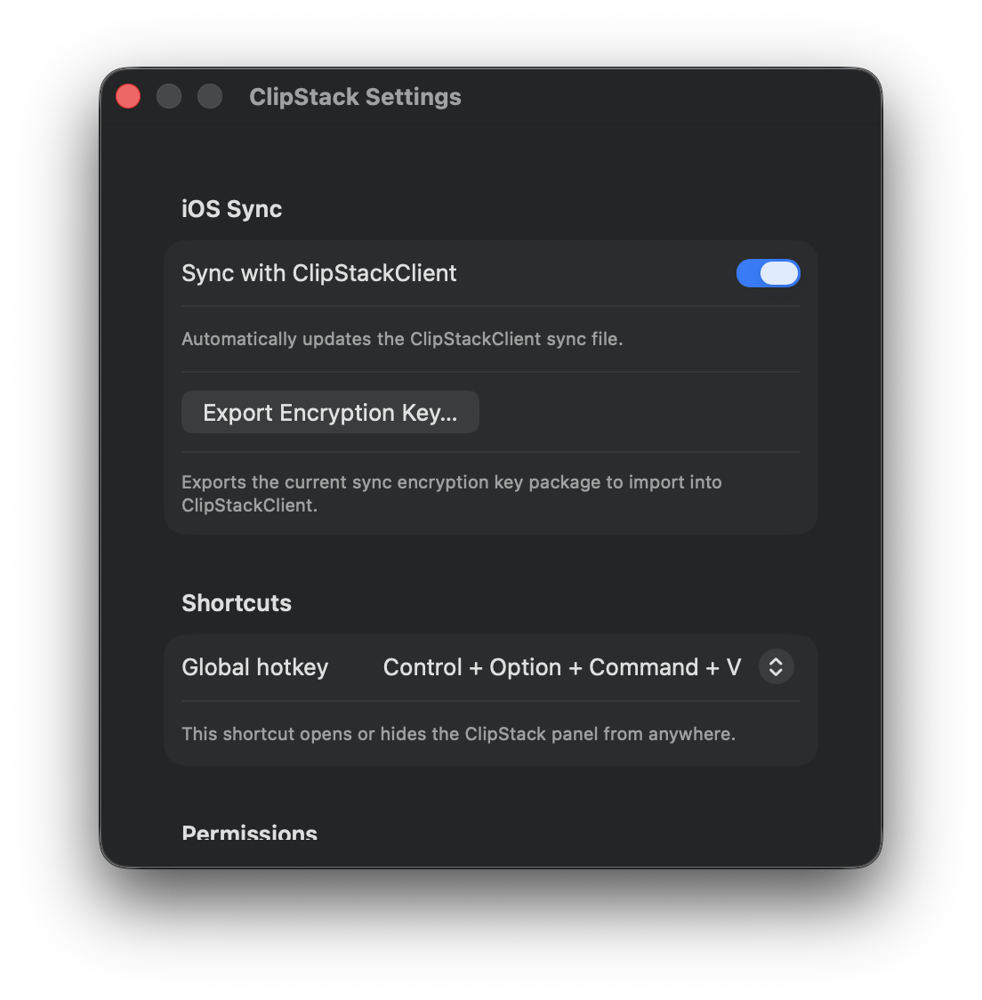
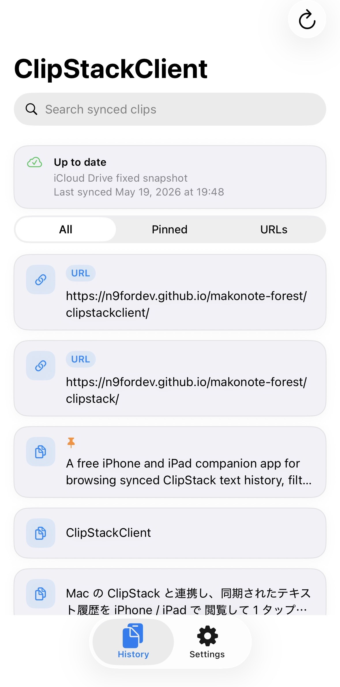
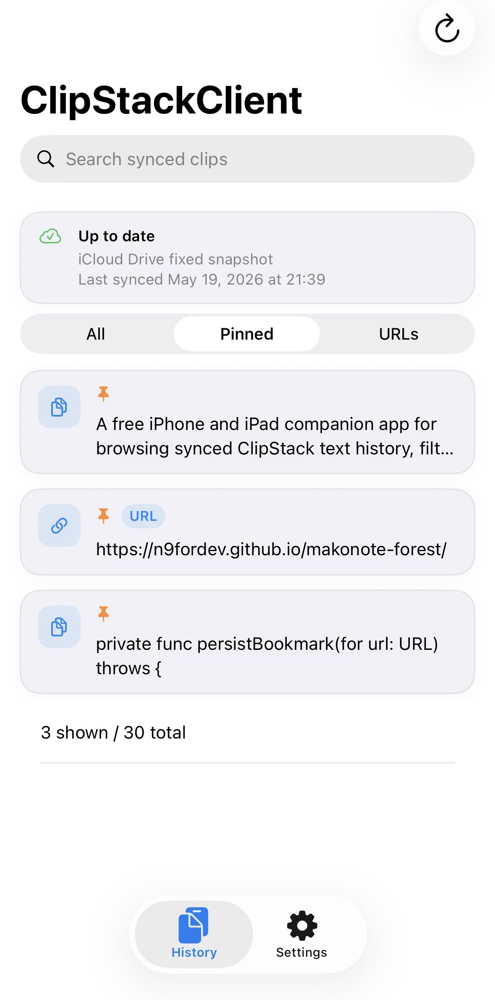
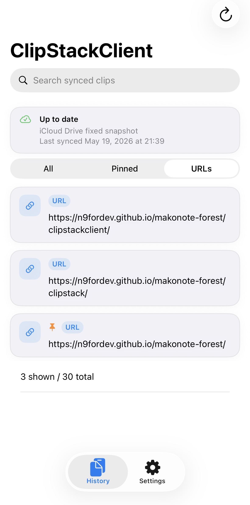

ClipStackClient is built around a simple flow.
Keep ClipStack on your Mac as the main place where history is collected, then use ClipStackClient to view and copy that synced text on iPhone or iPad.
Notice: ClipStackClient requires
ClipStack on macOS.
It does not collect clipboard history by itself. It reads the synced history uploaded by the Mac app.
It does not collect clipboard history by itself. It reads the synced history uploaded by the Mac app.
Initial setup
- On your Mac, open ClipStack Settings and turn on Sync with ClipStackClient.
- Keep iCloud Keychain turned on for both your Mac and your iPhone or iPad.
- Return to the main screen and update to load the latest synced text.

If you turn this switch off later, ClipStack stops updating ClipStackClient through CloudKit.
Main history view
- Tap a row to copy it immediately
- Use search to narrow down the visible list
- Switch between All, Pinned, and URLs
- Use pull-to-refresh or the toolbar update button to check for changes

Pinned tab
The Pinned tab is useful when you want to keep a small set of important items ready on mobile.

URLs tab
The URLs tab helps when you mainly want to move links between your Mac and iPhone without looking through every text item.

What the sync status card means
- Up to date: the latest refresh succeeded
- Syncing: the app is checking CloudKit for updates
- Sync failed: the app could not load the latest synced history
- Sync key unavailable: the shared iCloud Keychain key has not arrived yet
ClipStackClient does not edit history on the iPhone side in the
current release.
Pinning, deleting, and updating the sync file still happen in ClipStack on your Mac.
Pinning, deleting, and updating the sync file still happen in ClipStack on your Mac.
Settings overview
- Check whether a sync key is currently imported
- Check whether the shared sync key is available
- Review the current sync source and last sync time
- Open support and privacy information